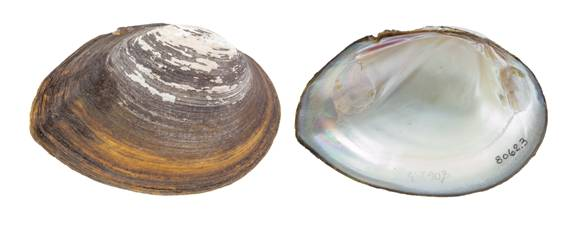

Glebula rotundata (Lamarck, 1819)
Round Pearlshell

Glebula rotundata – Lower Guadalupe River [Guadalupe River drainage], length 95.9 mm.
Identification
Shell structure: thin to moderately thick, moderately compressed to highly inflated.
Shell outline: elliptical, oval, or round.
Posterior ridge: low, rounded to sharp, may present multiple ridges.
Shell color: small individuals green or yellow, larger individuals brown, grey or black; surface dull.
Rays: occasionally with faint rays.
Shell texture: smooth.
Umbo: flat to moderately high, broad, even with the hinge line in smaller individuals to somewhat elevated in larger individuals; umbo cavity shallow to moderately deep.
Umbo sculpture: absent or thin irregular ridges.
Pseudocardinal teeth: thin to thick, triangular, and serrate, 2 divergent teeth in left valve, which are often subdivided, 1 in right valve.
Lateral teeth: short, thin to thick, straight to slightly curved, 2 in left valve, 1 in right valve.
Interdentum: long, very narrow.
Nacre: white, occasionally with pink, purple, or orange tint, some may show brassy blotches; iridescent posteriorly.
Other: sexual dimorphism subtle, females less elongate and more swollen posteriorly.
General range
Mississippi River basin from Louisiana to southeastern Arkansas to southwestern Mississippi, and Gulf Coastal drainages from the Guadalupe River basin in Texas to the Ochlockonee River basin in Florida.
Habitat
Occurs in streams to rivers, sloughs, oxbows, reservoirs, and canals. Typically restricted to the lower reaches of river basins near the coast. In riverine systems it is found primarily in nearshore habitats such as banks, backwaters and oxbows. Occurs in silt, mud, and sand, often with detritus in still to sluggish currents. Has also been observed inhabiting the roots of trees along steep banks and can occur in low estuarine areas.
Legal listing status
USFWS: None